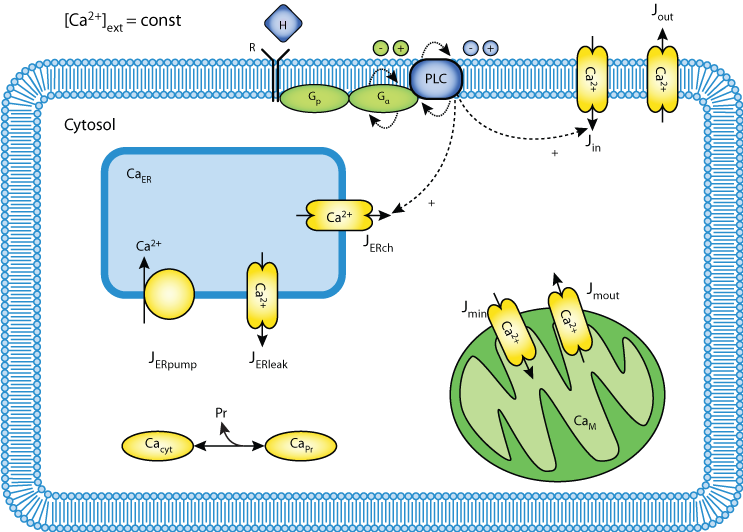

This CellML model should work in OpenCell and COR to reproduce published results. The a model is based on equations 2 (wihout mitochondria) and the b model is based on equatios 2 and 3 (with mitochondria). Six other versions are as follows: 2a and 2b = equations 3 and 4, 3a and 3b = equations 5 and 6, 4a and 4b = equations 7 and 8. Does not reproduce published results but runs in OpenCell.
In a mathematical model for simple calcium oscillations [Biophys. Chem. 71 (1998) 125], it has been shown that mitochondria play an important role in the maintenance of constant amplitudes of cytosolic Ca[2+] oscillations. Simple plausible rate laws for [Ca+] fluxes across the inner mitochondrial membrane have been used in this model. Here we show that it is possible to use the same rate laws as a plug-in element in other existing mathematical models and obtain the same effect on amplitude regulation. This result appears to be universal, independent of the type of model and the type of Ca oscillations. We demonstrate this on two models for spiking Ca oscillations [J. Biol. Chem. 266 (1991) 11068; Cell Calcium 14 (1993) 311] and on two recent models for bursting Ca oscillations; one of them being a receptor-operated model [Biophys. J. 79 (2000) 1188] and the other one being a store-operated model [BioSystems 57 (2000) 75].
The original paper reference is cited below:
'Mitochondria regulate the amplitude of simple and complex calcium oscillations', Vladimir Grubelnik, Ann Zahle Larsen, Ursula Kummer, Lars Folke Olsen, Marko Marhl, 2001 Biophysical Chemistry, 94, 59-74. PubMed ID: 11744191
|  |
| Schematic Diagram of Grubelnik model |